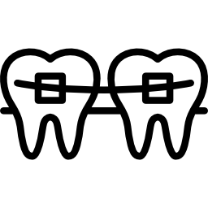

Nosso horário de atendimento para consultas é de segunda a sexta-feira, das 9h às 19h, e um sábado por mês, das 9h às 12h.
Dra. Michelle Cardoso
Há 20 anos cuidando de sorrisos. Especialista em Odontopediatria, atendimento de 0 a 18 anos.

Venha cuidar da saúde do seu filho!
Agendar ConsultaNosso Trabalho
Público Infantojuvenil
O atendimento personalizado e acolhedor da Tia Mi é um diferencial para as crianças, principalmente para as que apresentam medo de ir ao dentista.Com seu jeito carinhoso e atencioso, ela estabelece uma relação de confiança com os pequenos pacientes, tornando o tratamento mais tranquilo e agradável.

Tia mi e a paixão pelos aparelhos ortopédicos e ortodônticos
Além do atendimento personalizado e acolhedor, a Dra. Michelle tem uma vasta experiência em aparelhos ortopédicos e ortodônticos. Individualizados para cada tipo de mordida e criança, temos várias opções para correções esqueléticas bucais infantis. Se você perceber que seu filho não está mastigando corretamente, não está fechando a boca como deveria, venha conhecer o nosso trabalho e iniciar o tratamento quanto antes.
Atividade nas Redes Sociais
A Tia Mi e sua equipe mantêm contato constante com seus pacientes através das redes sociais, onde oferecem dicas de saúde bucal e avisos sobre o consultório. Siga-nos nas redes sociais para se manter atualizado sobre as novidades e cuidados importantes para a saúde bucal dos seus filhos.
Perguntas Frequentes
Qual o horário de atendimento?
Quando meu filho deve inicar o uso de aparelho?
Aparelho para criança é um tema que gera muitas dúvidas para os papais. Isso porque muita gente acredita que é preciso aguardar a troca dos dentes de leite pelos dentes permanentes, mas a realidade não é bem essa. Quanto antes os pequenos passarem por uma avaliação, mais simples será o tratamento e menores serão as chances de problemas dentários na vida adulta. Não existe limite de idade para iniciar um tratamento ortodôntico, mas é importante esclarecer que cada fase da vida exige métodos diferentes: quanto mais jovem o paciente, mais fácil pode se corrigir a posição da arcada dentária.
Onde fica o consultório?
Nosso consultório fica localizado nos Escritórios Mooca na Rua Alm. Brasil, 685 - Sala 608 - Mooca, São Paulo - SP. Venha nos visitar!
Onde Estamos
Temos uma clínica totalmente tematizada para nossas crianças se sentirem confortáveis durante a consulta.
Contato
comercial@dtiamidentista.com.br
recepcao@tiamidentista.com.br